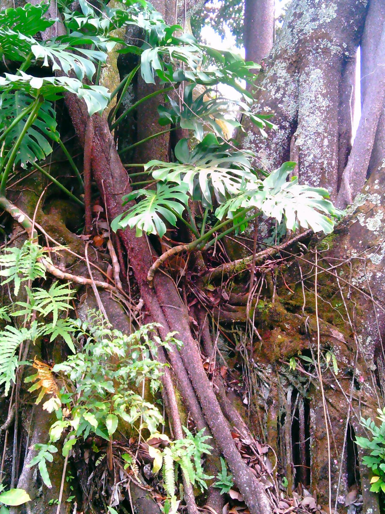

Este artículo propone una relectura crítica de la crisis ecológica desde una perspectiva antropológica transdisciplinaria, al integrar aportes de la física, biología, antropología y epistemología contemporáneas. Se cuestiona la falacia de la excepcionalidad humana y se plantea que la humanidad forma parte de sistemas abiertos, contingentes y co-evolutivos. A partir de los conceptos de agencia compartida, escalas de análisis y co-evolución gen-cultura, se analizan ejemplos etnográficos y científicos que demuestran la imbricación entre cultura, biología y medio ambiente. Se concluye que es urgente adoptar una ética ecocéntrica y una epistemología sistémica para responder a los desafíos actuales.
This article offers a critical rereading of the ecological crisis from a transdisciplinary anthropological perspective, integrating insights from physics, biology, anthropology, and contemporary epistemology. It challenges the fallacy of human exceptionalism and argues that humanity is part of open, contingent, and co-evolutionary systems. Using the concepts of shared agency, multi-scalar analysis, and gene–culture coevolution, the paper examines ethnographic and scientific examples that reveal the entanglement between culture, biology, and the environment. It concludes that an ecocentric ethic and systemic epistemology are urgently needed to address contemporary challenges.
Introducción
La crisis ecológica actual no debe ser entendida únicamente como un conjunto de problemas ambientales aislados. También está implicada nuestra forma de comprender lo humano y nuestro lugar en el Universo. Desde los discursos que reafirman la excepcionalidad de nuestra especie, hasta aquellos que celebran un relativismo subjetivista que reduce la acción a percepciones individuales, nos encontramos ante un panorama confuso y peligroso. La urgencia no es solo práctica —cómo responder al cambio climático, la pérdida de biodiversidad o la alteración de ciclos planetarios— sino también epistemológica: ¿cómo debemos pensar lo humano en un mundo contingente y complejo?
Sostengo que la crisis ecológica exige superar tanto el excepcionalismo humano como el subjetivismo absoluto, y requiere integrar las ciencias naturales, sociales y matemáticas en un marco transdisciplinario. Lejos de ser un sistema cerrado, lo humano forma parte de una red de sistemas abiertos, dinámicos y contingentes. Esto no reduce ni nuestra agencia ni nuestro compromiso; más bien, los redefine en términos de responsabilidad compartida.
Discusión conceptual
Pensar en la crisis ecológica desde la antropología requiere situarla en el marco de la complejidad. Como afirma Morin (2002), el pensamiento fragmentado, que separa rígidamente disciplinas y niveles de análisis, es incapaz de dar cuenta de los problemas contemporáneos. Los problemas actuales —desde el cambio climático hasta la alteración de los ciclos del agua o el colapso de ecosistemas— son fenómenos sistémicos: atraviesan escalas físicas, biológicas, sociales y culturales.
La física y la biología han mostrado que los sistemas vivos y sociales son sistemas lejos del equilibrio, no son estables ni lineales; viven de la transformación (Prigogine, 1997); se mantienen gracias a flujos de energía, información y materia, sin los cuales colapsarían. La vida misma es un proceso disipativo puesto que se sostiene gracias a la constante circulación de energía y materia.
Maturana y Varela (2003) introdujeron la noción de autopoiesis, subrayando que los sistemas vivos reproducen continuamente su organización a través de la interacción con su entorno. Esta idea permite comprender también a las sociedades humanas como procesos históricos abiertos, cuya continuidad depende de redes materiales y simbólicas.
Ahora bien, si seguimos a Giddens (2010), vemos que la modernidad ha insistido en una narrativa donde lo humano ocupa un lugar central y excepcional, separado de los procesos naturales. Esta excepcionalidad, como advierte Latour (2007), es ficticia, pues somos parte de una red de agencias múltiples donde ríos, animales, tecnologías, fuerzas físicas y otros organismos no humanos participan activamente en la configuración del mundo. No hay una frontera absoluta entre naturaleza y cultura, sino entramados híbridos en constante interacción.
Un concepto clave para comprender la relación entre humanos y medio ambiente es la coevolución gen-cultura. O'Brien y Laland (2012) la explican como un proceso en el que los cambios culturales influyen en la selección genética, y viceversa. Esto significa que las innovaciones culturales —desde la domesticación de animales hasta la fermentación de alimentos o la organización social compleja— no son meros añadidos externos a la biología humana, sino factores que han modelado nuestra evolución genética.
Un ejemplo clásico es la persistencia de la lactasa: la práctica cultural de la ganadería lechera generó una presión selectiva que favoreció a los individuos capaces de digerir la lactosa en la edad adulta. Otro ejemplo es el uso del fuego: su domesticación alteró nuestra dieta, redujo la carga energética de la digestión y favoreció transformaciones en la morfología y el metabolismo. Estos casos muestran cómo decisiones culturales locales, en escalas micro y meso, desencadenaron cambios biológicos y sociales de gran escala.
Kasser et al. (2024) amplían este enfoque al señalar que la evolución cultural no responde a una única lógica adaptativa, sino a múltiples factores simultáneos y contingentes, como el azar, la innovación tecnológica o la interacción con otros organismos. En el contexto de la crisis ecológica, esta perspectiva resulta esencial: nuestras prácticas culturales actuales (quema de combustibles fósiles, uso intensivo de plásticos, urbanización masiva) están generando presiones selectivas que ya afectan tanto a nuestra especie como a un gran número de otras.
Entender esto implica comprender y reconocer que lo humano no es un sistema aparte de la naturaleza: somos un entramado dinámico en el que biología y cultura se co-determinan. Esta mirada es crucial para evitar visiones teleológicas o excepcionalistas y, al mismo tiempo, diseñar estrategias de adaptación más realistas.
La crisis ecológica, comprendida desde una perspectiva sistémica y no fragmentaria, debe ser pensada como un estado de tensión histórica donde las dinámicas socioculturales humanas dejan de ser solo participantes del ecosistema y pasan a convertirse en un agente geológico. No se trata exclusivamente de afectación climática ni de un episodio ambiental aislado, sino de un cambio estructural en los procesos de autorregulación y resiliencia de la biosfera. En consonancia con Cuervo-Robayo y Niño-Monroy (2024), esta situación se describe como «una crisis ecológica planetaria» donde se entrelazan biodiversidad, bienestar animal, clima y salud de ecosistemas en una misma malla de interdependencia.
Al comparar el presente con los grandes eventos de extinción registrados en el registro geológico, Molina (2007) advierte que la diferencia esencial es que, en esta ocasión, el detonante del desequilibrio no es externo —ni asteroides, ni supervolcanes, ni reorganizaciones tectónicas— sino la propia expansión cultural, técnica y económica de Homo sapiens.
De tal manera se propone una definición operativa para el desarrollo posterior del análisis: la crisis ecológica actual es el deterioro acelerado y sistémico del sistema Tierra —clima, biodiversidad, ciclos de agua, suelos y estabilidad ecosistémica— provocado por dinámicas socioculturales que rebasan la capacidad regenerativa de la biosfera y generan un riesgo de colapso comparable a extinciones previas.
Análisis
Reduccionismo disciplinar
Por un lado, el primer obstáculo es el reduccionismo. Aún persiste la imagen de las ciencias naturales como mecanicistas, ignorando que la física contemporánea ya ha trascendido el determinismo para incorporar el caos, la incertidumbre y la no linealidad (Prigogine, 1997).
Por otro lado, algunas corrientes de las ciencias sociales se han refugiado en discursos puramente subjetivos, donde la evidencia empírica pierde peso frente a narrativas autorreferenciales (Aguilar Revelo, 2021). Ambos extremos son incapaces de ofrecer marcos adecuados para enfrentar la crisis.
Escalas: micro, meso y macro
La crisis ecológica también debe pensarse desde múltiples escalas.1 En la escala micro, cambios locales como mutaciones genéticas, la introducción de especies invasoras o alteraciones en prácticas agrícolas pueden desencadenar transformaciones en la escala meso, como la reorganización de ecosistemas o sistemas productivos regionales. Estas, a su vez, se amplifican en la escala macro, afectando al clima planetario y a la biosfera. Morin (1990) insiste en que los fenómenos complejos solo pueden comprenderse atendiendo a la articulación entre niveles.
Un ejemplo concreto es el siguiente: en el Caribe, la sobreexplotación de arrecifes locales (micro) ha provocado el colapso de ecosistemas pesqueros (meso), lo que a su vez ha alterado cadenas alimenticias y acelerado procesos de erosión costera (macro), aumentando la vulnerabilidad frente a huracanes (Organización de las Naciones Unidas para la Alimentación y la Agricultura [FAO], 2022).
En la escala micro, agricultores y agricultoras seleccionaron, de manera empírica, variedades con características favorables (granos más grandes, frutos menos amargos, raíces más nutritivas). Esto no solo alteró la morfología de las plantas, sino también las rutinas y calendarios humanos. En la escala meso, estas prácticas modificaron ecosistemas enteros: la deforestación para abrir campos, la domesticación de suelos mediante irrigación y la proliferación de monocultivos. Con ello surgieron nuevas formas de organización social y de trabajo, dependientes del manejo intensivo de la tierra y del almacenamiento de excedentes.
Finalmente, en la escala macro, la agricultura desencadenó una transformación genética y cultural en los humanos mismos. Cambios en la dieta produjeron efectos sobre la estatura, la salud dental y la densidad ósea. La vida sedentaria y la convivencia con animales domesticados favorecieron la propagación de enfermedades zoonóticas, lo que presionó al sistema inmunológico humano. Además, la concentración poblacional en aldeas y ciudades generó nuevas instituciones, jerarquías y conflictos.
En otras palabras, la agricultura no fue un «invento» externo a la biología humana, sino un fenómeno que reconfiguró simultáneamente ecosistemas, genes y culturas. Esta perspectiva de escalas permite comprender que las innovaciones humanas nunca permanecen confinadas al ámbito local: su impacto se amplifica y proyecta hacia niveles cada vez mayores. Precisamente por eso, nuestras prácticas contemporáneas —como la quema de combustibles fósiles o la deforestación— deben entenderse no como decisiones aisladas, sino como procesos que generan presiones y efectos de alcance planetario.
Contra la excepcionalidad humana
El segundo obstáculo es la falacia de la excepcionalidad. Desde las raíces judeocristianas y platónicas, se ha concebido al ser humano como una «segunda naturaleza», distinta de lo físico y lo biológico. Sin embargo, los datos de la ciencia desmontan esta ilusión.
Los ciclos de Milankovitch han producido transformaciones climáticas y ecológicas profundas; demuestran que nuestra evolución ha estado condicionada por factores cósmicos ajenos a cualquier voluntad humana, y han sido decisivos en nuestra historia evolutiva y la de otros homínidos (Rúa, 2021). Del mismo modo, el impacto K/T, que hace 66 millones de años provocó la extinción de los dinosaurios, confirma que la Tierra nunca ha sido un sistema cerrado (Molina, 2007). Estos fenómenos astronómicos y geológicos nos recuerdan que nuestra existencia depende de condiciones cósmicas sobre las que no tenemos control.
La astronomía, en este sentido, ha ampliado radicalmente nuestra concepción de sistema abierto: no solo estamos conectados con los procesos de la biosfera, sino también con dinámicas solares, orbitales y estelares.
El universo contingente
Aceptar que el universo es contingente y no determinista, como señaló Prigogine (1997), implica un cambio radical en la forma de pensar lo humano. La historia de la vida, y en particular la crisis ecológica actual, no responde a un guion preestablecido, sino a procesos caóticos sensibles a condiciones iniciales.
Basta pensar en cómo la quema intensiva de combustibles fósiles en apenas dos siglos ha desencadenado transformaciones climáticas de alcance planetario. Pequeños cambios, en escalas cortas, pueden generar consecuencias irreversibles a escalas mayores.
Agencia compartida
Otro concepto crucial es el de agencia compartida. Latour (2007) propone pensar en un «parlamento de las cosas», donde no solo los humanos, sino también los no-humanos, actúan. Los glaciares que se derriten, los virus que se propagan o los ríos que cambian su curso son actores, o al menos vectores, cuyas fuerzas son capaces de transformar radicalmente lo social.
La crisis ecológica no es, entonces, un enfrentamiento entre «humanidad» y «naturaleza», sino un entramado de interacciones donde múltiples agentes producen efectos y sufren consecuencias.
La etnografía nos ofrece ejemplos claros. Entre los pueblos inuit del Ártico, el deshielo del permafrost no es un proceso pasivo: condiciona la movilidad, transforma los patrones de caza y obliga a replantear las prácticas sociales (Krupnik y Jolly, 2002). En la Amazonía, comunidades indígenas interpretan el retroceso de los ríos y la alteración de lluvias no como «desastres naturales», sino como interacciones de múltiples seres —humanos y no-humanos— que requieren nuevas formas de reciprocidad (Descola, 2012).
En el Sahel africano, agricultores han respondido a la desertificación intensificando técnicas tradicionales de captación de agua, mostrando cómo el conocimiento local se entrelaza con la resiliencia ecológica (Mortimore, 2009).
Riesgos existenciales
Los riesgos existenciales no provienen únicamente de la acción humana, sino también de fenómenos naturales y cósmicos que escapan a nuestro control directo. El incremento de la actividad solar —un fenómeno caótico y aún poco comprendido (Wired, 2024)— representa una amenaza de escala planetaria. La World Meteorological Organization (2025) ha advertido, además, sobre el aumento de fenómenos extremos vinculados a la variabilidad solar y climática, que podrían amplificarse a través de retroalimentaciones globales. El IPCC (2023) ha señalado igualmente que incluso si cesaran hoy las emisiones, la inercia del sistema climático implicaría impactos severos durante siglos.
Otros escenarios incluyen la caída de asteroides o erupciones de supervolcanes. La Administración Nacional de Aeronáutica y del Espacio [NASA] (2022) monitorea de manera permanente objetos cercanos a la Tierra que podrían impactar el planeta, y aunque la probabilidad anual es baja, las consecuencias serían catastróficas. La erupción del Toba, hace 74 mil años (EFE News Services, Inc., 2020; Lobanovsky, 2021), redujo drásticamente la población humana; un evento similar hoy tendría consecuencias civilizatorias.
Frente a estas contingencias, surge un dilema ético profundo: si tuviéramos la capacidad técnica de prevenir o mitigar tales amenazas, o incluso de migrar hacia otros entornos cósmicos para preservar la vida, ¿no deberíamos asumir esa responsabilidad? La historia humana está marcada por migraciones ante condiciones adversas. Extender esta lógica a escalas cósmicas puede parecer radical, pero es coherente con la responsabilidad de preservar la vida como fenómeno planetario y universal.
Discusión
La reflexión antropológica nos permite identificar tres errores persistentes en el abordaje de la crisis: el teleologismo es una trampa; asumir que el devenir humano tiene un destino inevitable oscurece la responsabilidad de nuestras acciones presentes. El reduccionismo disciplinar es un error fatal, pues la crisis exige integrar perspectivas, no perpetuar fronteras. El subjetivismo extremo es insuficiente: las percepciones individuales que diluyen la acción colectiva se contraponen a la construcción de políticas basadas en datos y evidencia.
Frente a esto, se impone un carácter propositivo. A escala local, la antropología ha mostrado que comunidades locales adaptan prácticas tradicionales para aumentar la resiliencia ecológica; comunidades indígenas y rurales muestran que el conocimiento tradicional, cuando se articula con ciencia contemporánea, puede generar resiliencia. Un ejemplo de lo anterior es el siguiente: proyectos de reforestación comunitaria en Centroamérica que recuperan cuencas hidrográficas.
A escala regional, iniciativas de gestión territorial y redes de cooperación regional permiten articular saberes locales con políticas nacionales (Aguilar Revelo, 2021); asimismo, políticas de cooperación, como los planes de gestión de cuencas binacionales (México–Guatemala, Perú–Bolivia), integran ecosistemas compartidos y ponen en práctica la noción de sistemas abiertos. A escala global, los organismos internacionales —WMO, IPCC, FAO— plantean marcos de acción coordinada que, si bien son limitados, muestran que la cooperación planetaria es imprescindible. A escala astronómica, la posibilidad de prevenir impactos de asteroides, o de migrar eventualmente más allá de la Tierra, obliga a pensar la preservación de la vida como responsabilidad que trasciende lo humano y lo planetario.
El reconocimiento de lo humano como parte de sistemas abiertos redefine nuestra agencia: no somos excepcionales, pero sí tenemos la capacidad de transformar el mundo en múltiples escalas. La responsabilidad ética consiste en orientar esa capacidad hacia escenarios de preservación de la vida, evitando tanto el catastrofismo paralizante como el optimismo ingenuo.
Conclusiones
La crisis ecológica actual nos enfrenta a la necesidad de repensarnos radicalmente. No podemos seguir concibiéndonos como un sistema cerrado ni como el centro del universo. La evidencia científica y antropológica converge en un punto: lo humano es un fenómeno emergente más, inserto en dinámicas contingentes que nos exceden.
La antropología puede y debe aportar a este horizonte, no como una disciplina aislada, sino como un campo de cruce que articula saberes, evidencia y reflexividad crítica, integrando conocimientos y articulando acción responsable.
1 Estos niveles de análisis han sido desarrollados inicialmente desde la Geografía; pueden entenderse como niveles de organización relacional y dinámica, cuya definición varía según el marco epistemológico adoptado.
Referencias bibliográficas
- Deleuze, G. (2005). Lógica del sentido. Barcelona: Paidós.
- Descola, P. (2012). Más allá de naturaleza y cultura. Buenos Aires: Amorrortu.
- EFE News Services, Inc. (2020). Los humanos sobrevivieron a la erupción del Toba, que no fue tan apocalíptica: evolución humana. Madrid: EFE News Services, Inc.
- Escohotado, A. (1999). Caos y orden. Madrid: Espasa-Calpe.
- Giddens, A. (2010). La constitución de la sociedad. Buenos Aires: Amorrortu.
- Goldman, A. (1986). Epistemology and cognition. Harvard University Press.
- Kasser, S. M., Lala, K. N., Fortunato, L., & Feldman, M. W. (2024). Not by selection alone: Expanding the scope of gene-culture coevolution. Evolutionary Anthropology, 34(3), 1–17.
- Krupnik, I., & Jolly, D. (Eds.). (2002). The earth is faster now: Indigenous observations of Arctic environmental change. Fairbanks: ARCUS.
- Latour, B. (2007). Nunca fuimos modernos. Buenos Aires: Siglo XXI.
- Lobanovsky, Y. I. (2021). Origin of modern humanity in the light of system analysis. South Florida Journal of Development, 2(3), 4387–4416. https://doi.org/10.46932/sfjdv2n3-045
- Maturana, H. (2003). La objetividad: un argumento para obligar. Santiago: Dolmen.
- Maturana, H., & Varela, F. (2003). El árbol del conocimiento. Santiago: Editorial Universitaria.
- Molina, E. (2007). Causas de los principales eventos de extinción en los últimos 66 millones de años. Revista de la Academia de Ciencias Exactas, Físico-Químicas y Naturales de Zaragoza, 62, 37–64.
- Morin, E. (1990). Introducción al pensamiento complejo. Barcelona: Gedisa.
- Morin, E. (2002). La mente bien ordenada. Barcelona: Seix Barral.
- Mortimore, M. (2009). Dryland opportunities: A new paradigm for people, ecosystems and development. Londres: IUCN.
- O'Brien, M. J., & Laland, K. N. (2012). Genes, culture, and agriculture: An example of human niche construction. Current Anthropology, 53(4), 434–470.
- Organización de las Naciones Unidas para la Alimentación y la Agricultura [FAO]. (2022). El estado mundial de la pesca y la acuicultura. Roma: FAO.
- Orlove, B., Chiang, J., & Cane, M. (2008). Forecasting Andean glaciers. Annual Review of Environment and Resources, 33, 149–176.
- Panel Intergubernamental sobre el Cambio Climático [IPCC]. (2023). Climate Change 2023: Synthesis Report. Ginebra: IPCC.
- Prigogine, I. (1997). El fin de las certezas. Barcelona: Tusquets.
- Reynoso, C. (2006). Complejidad y caos: una exploración antropológica. Buenos Aires: Sb.
- Rúa, M. (2021). Los ciclos de Milankovitch y su impacto en el clima terrestre. Universidad de Alicante.
- Samper-Kutschbach, M., & Martínez Martínez, M. A. (2023). Análisis geohistórico multi-escalar en América Latina. Diálogos Revista Electrónica de Historia, 24(2), 177–222.
- Wired. (2024). La actividad del sol aumenta cada vez más y los expertos no saben por qué. Recuperado de es.wired.com
- World Meteorological Organization. (2025). WMO Global Annual to Decadal Climate Update (2025–2029). Recuperado de wmo.int
Montero Fonseca, A. (2025). Crisis ecológica, contingencia y la falacia de la excepcionalidad humana: hacia una lectura antropológica de sistemas abiertos. Raíces, Revista de Antropología y Arqueología, 1(2), 37–46.
Artículo recibido el 3 de octubre de 2025 y aprobado el 7 de diciembre de 2025. Publicado en Raíces, Revista de Antropología y Arqueología, Vol. 1, Núm. 2 (diciembre de 2025), Escuela de Antropología, Universidad de Costa Rica. Esta versión reproduce el texto completo del artículo tal como apareció en la revista. La revista se puede consultar a través del repositorio institucional Kérwá de la Universidad de Costa Rica (kerwa.ucr.ac.cr).